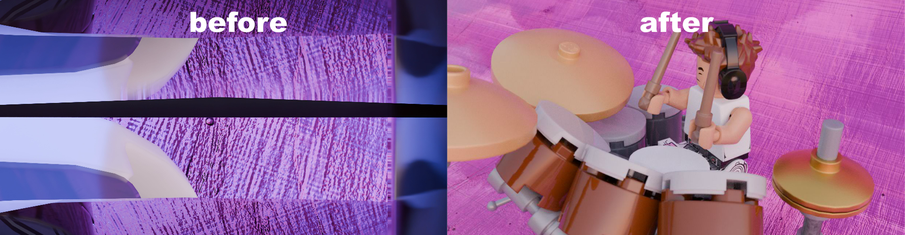
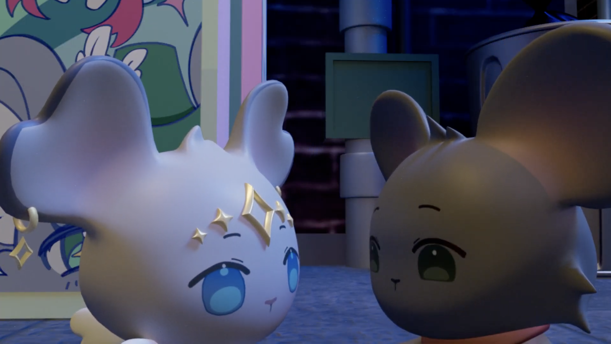
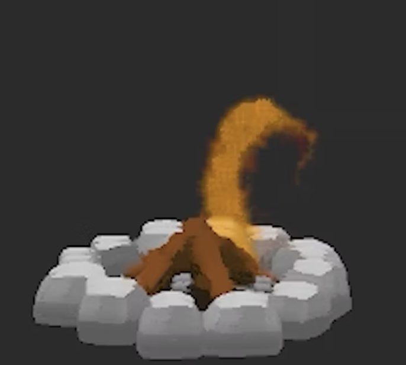
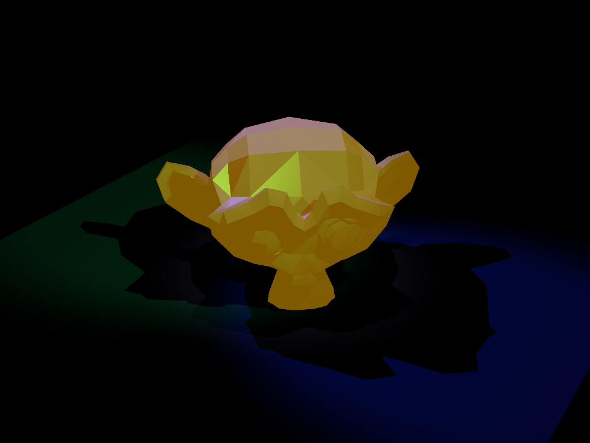
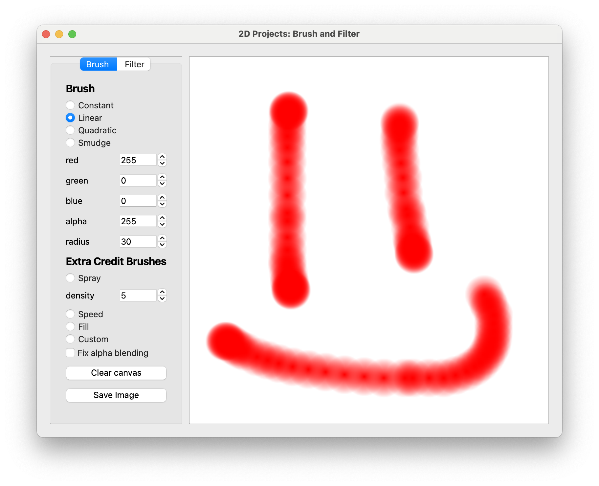

-
 Maya Render Queue Tool
Maya Render Queue Tool
Python-based render and shot-automation tool featuring dynamic queue management
December 2025 -

Blender Shot Recovery (Python Script)
Python script for recovering animation with corrupted cameras in Blender
July 2025 -

Pull U Once, Shame on Me

Student film; developed Python-based shot automation tool, debugged shaders and noise, and supported lighting and rigging throughout production.
September 2025 – December 2025
-

Fluid-Based Fire Simulation
Custom tool for managing render jobs in Maya
November - December 2025 -

C++ Raytracer
Custom raytracer built in C++ for a Computer Graphics course, with support for OBJ triangle meshes, recursive ray reflections, texture mapping, supersampling, and anti-aliasing.
September – November 2025 -

Brush Drawing Application
Raster drawing application built in C++ for a Computer Graphics course, featuring constant, linear, quadratic, and smudge brushes.
September 2025